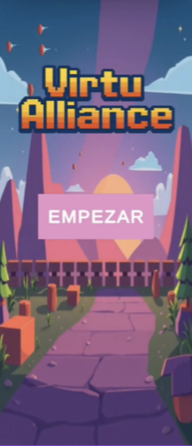
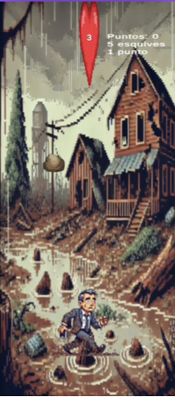
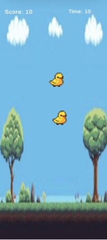
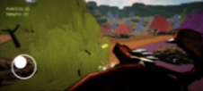
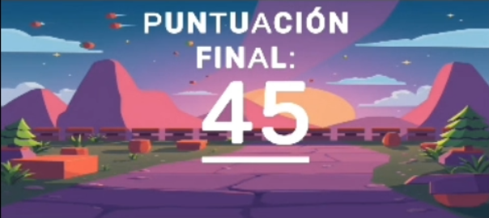
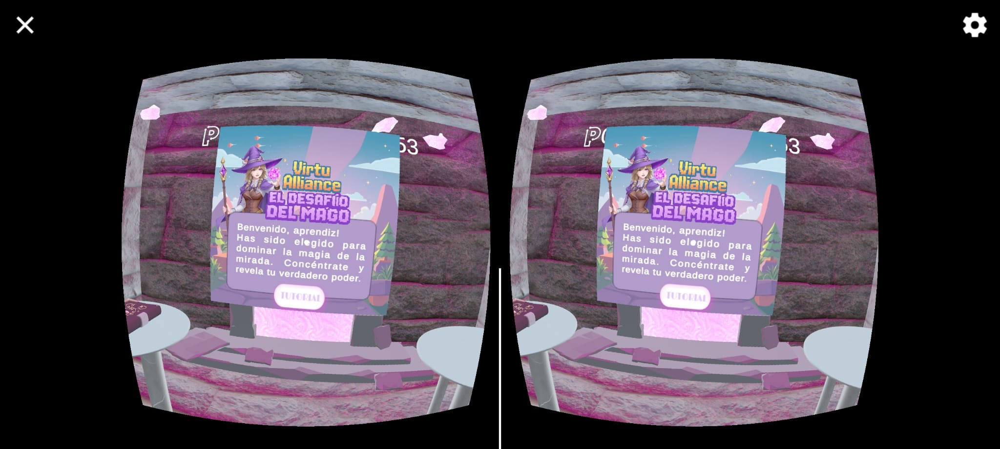
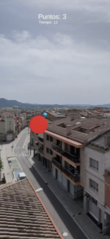

ViruAlliance se planteó inicialmente como una experiencia unificada que combinaba minijuegos en 2D, un modo de realidad aumentada (AR) y un prototipo en 3D/VR. Debido a limitaciones técnicas y problemas de integración, el diseño final se convirtió en una experiencia lineal: cuando el jugador muere o se agota el tiempo en un juego, pasa automáticamente al siguiente. La puntuación de cada minijuego se suma a una pantalla final, donde se muestra el total combinado de los juegos 2D, el 3D y el AR. El modo VR se desarrolló como proyecto separado, centrado en una experiencia inmersiva de interacción con la mirada.
ViruAlliance es una colección de minijuegos conectados entre sí: La Catástrofe (2D), Duck 2D, Torbi 3D, Diana AR y El desafío del mago VR. Cada juego tiene una mecánica distinta (esquivar, tocar, recolectar, apuntar, mirar) pero comparte un sistema común de tiempo limitado y puntuación acumulada. El objetivo es explorar diferentes tecnologías (2D, 3D, AR y VR) dentro de un mismo concepto jugable.
Unity
C#
2D & 3D
VR
AR
Controles táctiles
Audio & FX
Timers






